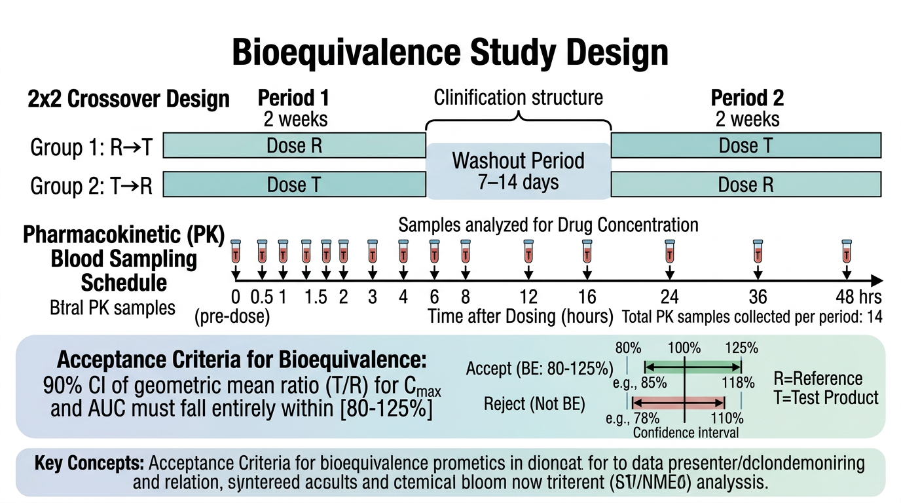
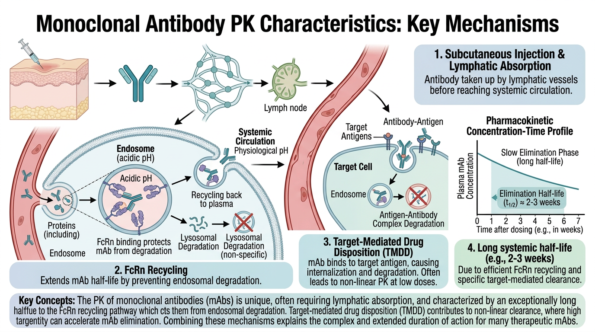
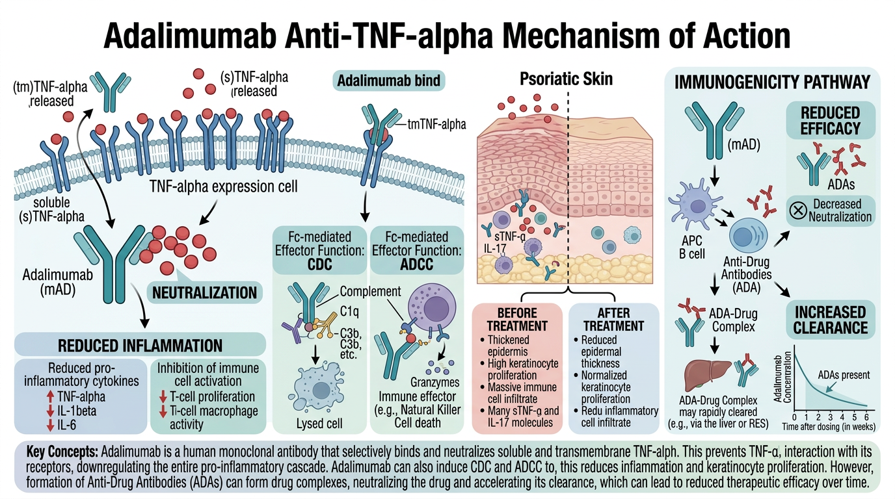

# 이 장에서 사용하는 패키지
library(tidyverse) # dplyr, ggplot2, tidyr 등
library(NonCompart) # 비구획분석
library(gt) # 출판 품질 테이블
library(broom) # 모델 결과 정리8 PK 데이터에서 약동학 정보 추출
이 장에서는 약물 농도-시간 데이터로부터 약동학 파라미터를 추출하는 방법을 심도 있게 학습합니다. 비구획분석(Non-Compartmental Analysis, NCA)의 수학적 원리를 이해하고, 생물학적 동등성(Bioequivalence, BE) 시험 분석을 실습하며, 단클론항체(monoclonal antibody, mAb)의 특수한 PK 특성을 다룹니다.
실습 예제에서는 건선 및 자가면역 질환 치료에 사용되는 Adalimumab과 Apremilast의 데이터를 활용합니다.
8.1 NCA 심화
8.1.1 사다리꼴 방법의 수학적 원리
비구획분석에서 AUC(Area Under the Curve)는 농도-시간 곡선 아래 면적을 의미합니다. 이를 계산하는 기본 방법이 사다리꼴 방법(trapezoidal rule)입니다.
두 연속된 시점 \(t_i\)와 \(t_{i+1}\)에서의 농도가 \(C_i\)와 \(C_{i+1}\)일 때, 이 구간의 AUC는 다음과 같이 계산합니다:
Linear Trapezoidal Method (선형 사다리꼴 방법):
\[ AUC_{t_i \to t_{i+1}} = \frac{(C_i + C_{i+1})}{2} \times (t_{i+1} - t_i) \]
이 방법은 두 시점 간의 농도 변화가 선형(linear)이라고 가정합니다. Cmax 이전의 흡수상(absorption phase)에서는 적절하지만, 소실상(elimination phase)에서는 AUC를 과대 추정하는 경향이 있습니다.
Logarithmic Trapezoidal Method (대수 사다리꼴 방법):
\[ AUC_{t_i \to t_{i+1}} = \frac{(C_i - C_{i+1})}{\ln(C_i) - \ln(C_{i+1})} \times (t_{i+1} - t_i) \]
단, \(C_i \neq C_{i+1}\)이고 둘 다 양수일 때. \(C_i = C_{i+1}\)이면 선형 방법과 동일합니다.
이 방법은 소실상에서 농도가 지수적으로 감소(exponential decline)한다는 가정 하에 더 정확한 AUC를 제공합니다.
Linear-up/Log-down Method (선형 상승/대수 하강 방법):
\[ AUC_{t_i \to t_{i+1}} = \begin{cases} \frac{(C_i + C_{i+1})}{2} \times (t_{i+1} - t_i) & \text{if } C_{i+1} \geq C_i \text{ (상승)} \\ \frac{(C_i - C_{i+1})}{\ln C_i - \ln C_{i+1}} \times (t_{i+1} - t_i) & \text{if } C_{i+1} < C_i \text{ (하강)} \end{cases} \]
이 방법은 두 방법의 장점을 결합한 것으로, 현재 NCA의 표준 방법으로 가장 널리 사용됩니다. 농도가 상승하는 구간에서는 선형 방법을, 하강하는 구간에서는 대수 방법을 적용합니다.
중요사다리꼴 방법 선택의 영향
방법 선택에 따라 AUC 값이 달라질 수 있으며, 이 차이는 특히 채혈 간격이 넓을수록 커집니다. 규제 기관 제출용 분석에서는 반드시 사용한 방법을 명시해야 합니다. FDA는 일반적으로 linear-up/log-down 방법을 선호합니다.
# 사다리꼴 방법 비교 구현
# 예시 데이터: Apremilast 30mg 단회 투여
time <- c(0, 0.5, 1, 2, 4, 6, 8, 12, 24)
conc <- c(0, 125.3, 310.8, 485.2, 380.1, 220.5, 145.8, 62.3, 10.2)
# 1. Linear Trapezoidal
auc_linear <- function(time, conc) {
n <- length(time)
auc <- 0
for (i in 1:(n-1)) {
auc <- auc + (conc[i] + conc[i+1]) / 2 * (time[i+1] - time[i])
}
return(auc)
}
# 2. Log Trapezoidal
auc_log <- function(time, conc) {
n <- length(time)
auc <- 0
for (i in 1:(n-1)) {
if (conc[i] > 0 & conc[i+1] > 0 & conc[i] != conc[i+1]) {
auc <- auc + (conc[i] - conc[i+1]) / (log(conc[i]) - log(conc[i+1])) *
(time[i+1] - time[i])
} else {
auc <- auc + (conc[i] + conc[i+1]) / 2 * (time[i+1] - time[i])
}
}
return(auc)
}
# 3. Linear-up/Log-down
auc_linuplogdown <- function(time, conc) {
n <- length(time)
auc <- 0
for (i in 1:(n-1)) {
if (conc[i+1] >= conc[i]) {
# 상승 구간: 선형
auc <- auc + (conc[i] + conc[i+1]) / 2 * (time[i+1] - time[i])
} else if (conc[i] > 0 & conc[i+1] > 0) {
# 하강 구간: 대수
auc <- auc + (conc[i] - conc[i+1]) / (log(conc[i]) - log(conc[i+1])) *
(time[i+1] - time[i])
} else {
auc <- auc + (conc[i] + conc[i+1]) / 2 * (time[i+1] - time[i])
}
}
return(auc)
}
# 비교
tibble(
Method = c("Linear", "Log", "Linear-up/Log-down"),
AUC_0_24 = c(auc_linear(time, conc),
auc_log(time, conc),
auc_linuplogdown(time, conc))
) |>
mutate(AUC_0_24 = round(AUC_0_24, 1))8.1.2 Lambda_z 추정
\(\lambda_z\) (terminal elimination rate constant)는 소실상의 기울기를 나타내며, 반감기 계산의 기본이 됩니다.
\[ t_{1/2} = \frac{\ln 2}{\lambda_z} = \frac{0.693}{\lambda_z} \]
\(\lambda_z\)는 농도-시간 곡선의 말기(terminal phase)에서 \(\ln(C)\)와 \(t\)의 선형 회귀를 통해 추정합니다:
\[ \ln C(t) = \ln C_0' - \lambda_z \cdot t \]
여기서 기울기(\(-\lambda_z\))의 절대값이 \(\lambda_z\)입니다.
\(\lambda_z\) 추정 시 고려사항:
- 최소 3개의 데이터 포인트 사용 (FDA 권장)
- 조정 결정계수 (adjusted R²) ≥ 0.80 이상이어야 신뢰할 수 있음
- Cmax 이후의 데이터 포인트만 사용 (흡수상 데이터 제외)
- BLQ 데이터는 제외
- 최적의 데이터 포인트 수 선택: 너무 적으면 부정확, 너무 많으면 비말기상(non-terminal phase) 데이터가 포함될 수 있음
# Lambda_z 수동 계산
# Cmax 이후 데이터 포인트 (소실상)
time_elim <- c(4, 6, 8, 12, 24)
conc_elim <- c(380.1, 220.5, 145.8, 62.3, 10.2)
ln_conc <- log(conc_elim)
# 최적 포인트 수 결정: 3점부터 시작하여 adjusted R²가 최대인 조합 선택
find_best_lambda_z <- function(time_elim, conc_elim) {
n <- length(time_elim)
results <- tibble(
n_points = integer(),
lambda_z = double(),
adj_r_sq = double(),
t_half = double()
)
for (n_pts in 3:n) {
# 마지막 n_pts 포인트 사용
idx <- (n - n_pts + 1):n
t_sub <- time_elim[idx]
lnc_sub <- log(conc_elim[idx])
fit <- lm(lnc_sub ~ t_sub)
adj_r2 <- summary(fit)$adj.r.squared
lz <- -coef(fit)[2] # 기울기의 절대값
results <- bind_rows(results, tibble(
n_points = n_pts,
lambda_z = lz,
adj_r_sq = adj_r2,
t_half = log(2) / lz
))
}
results
}
lambda_z_results <- find_best_lambda_z(time_elim, conc_elim)
lambda_z_results
# 최적 결과 선택 (adjusted R² 최대)
best_result <- lambda_z_results |>
filter(adj_r_sq == max(adj_r_sq))
cat("최적 lambda_z:", round(best_result$lambda_z, 4), "1/h\n")
cat("반감기:", round(best_result$t_half, 1), "시간\n")
cat("사용 포인트 수:", best_result$n_points, "\n")
cat("Adjusted R²:", round(best_result$adj_r_sq, 4), "\n")# Lambda_z 추정의 시각화
time_plot <- time_elim
conc_plot <- conc_elim
ln_conc_plot <- log(conc_plot)
# 회귀선 계산 (최적 포인트 기준)
n_best <- best_result$n_points
idx_best <- (length(time_plot) - n_best + 1):length(time_plot)
fit_best <- lm(log(conc_plot[idx_best]) ~ time_plot[idx_best])
# 반로그 그래프
ggplot(tibble(Time = time_plot, LnConc = ln_conc_plot), aes(Time, LnConc)) +
geom_point(size = 3, color = "blue") +
geom_abline(
slope = coef(fit_best)[2],
intercept = coef(fit_best)[1],
color = "red", linewidth = 1, linetype = "dashed"
) +
annotate("text", x = 15, y = 5,
label = paste0("λz = ", round(-coef(fit_best)[2], 4), " 1/h\n",
"t1/2 = ", round(log(2) / (-coef(fit_best)[2]), 1), " h\n",
"Adj R² = ", round(summary(fit_best)$adj.r.squared, 4)),
hjust = 0, size = 4) +
labs(
x = "Time (hours)",
y = "ln(Concentration)",
title = "Terminal Phase에서의 λz 추정",
subtitle = paste("마지막", n_best, "포인트 사용")
) +
theme_bw()8.1.3 AUCinf 외삽과 신뢰성 기준
\(\lambda_z\)가 추정되면, 마지막 측정 시점(\(t_{last}\)) 이후의 AUC를 외삽하여 AUC0-∞를 계산할 수 있습니다:
\[ AUC_{0-\infty} = AUC_{0-t_{last}} + \frac{C_{last}}{\lambda_z} \]
여기서 \(C_{last}\)는 마지막 정량 가능한 농도이고, \(\frac{C_{last}}{\lambda_z}\)가 외삽 부분입니다.
외삽 비율(% extrapolated)은 AUC의 신뢰성을 판단하는 중요한 지표입니다:
\[ \%AUC_{extrap} = \frac{AUC_{t_{last}-\infty}}{AUC_{0-\infty}} \times 100 = \frac{C_{last} / \lambda_z}{AUC_{0-\infty}} \times 100 \]
경고AUC 외삽 비율 기준
일반적으로 외삽 비율이 20% 이하여야 AUC0-∞가 신뢰할 수 있다고 판단합니다. 외삽 비율이 높은 경우:
- 채혈 기간이 충분하지 않았을 가능성
- \(\lambda_z\) 추정이 부정확할 가능성
- AUC0-tlast를 사용하는 것이 더 적절할 수 있음
FDA BE 가이던스에서는 외삽 비율이 20%를 초과하는 대상자의 데이터를 분석에서 제외하거나, 별도로 보고하도록 권고합니다.
8.1.4 Partial AUC 계산
전체 AUC 외에 특정 시간 구간의 AUC를 계산하는 것이 필요한 경우가 있습니다. 이를 Partial AUC라고 합니다.
예를 들어:
- AUC0-12h: 투약 후 12시간까지의 AUC (BID 투약 시 투약 간격 AUC)
- AUC0-4h: 초기 흡수 단계의 노출량 평가
- Partial AUC ratio: 변형 방출 제형(modified-release formulation)의 흡수 특성 비교
# Partial AUC 계산 함수
calc_partial_auc <- function(time, conc, t_start, t_end,
method = "linear_up_log_down") {
# t_start와 t_end 사이의 데이터 추출
# 보간(interpolation)이 필요한 경우 처리
# 시작 시점 보간
if (!t_start %in% time) {
idx <- max(which(time < t_start))
if (method == "linear_up_log_down" & conc[idx + 1] < conc[idx]) {
# Log interpolation
c_start <- exp(log(conc[idx]) + (log(conc[idx+1]) - log(conc[idx])) /
(time[idx+1] - time[idx]) * (t_start - time[idx]))
} else {
# Linear interpolation
c_start <- conc[idx] + (conc[idx+1] - conc[idx]) /
(time[idx+1] - time[idx]) * (t_start - time[idx])
}
time <- c(time[1:idx], t_start, time[(idx+1):length(time)])
conc <- c(conc[1:idx], c_start, conc[(idx+1):length(conc)])
}
# 종료 시점 보간 (동일한 방법)
if (!t_end %in% time) {
idx <- max(which(time < t_end))
if (method == "linear_up_log_down" & conc[idx + 1] < conc[idx]) {
c_end <- exp(log(conc[idx]) + (log(conc[idx+1]) - log(conc[idx])) /
(time[idx+1] - time[idx]) * (t_end - time[idx]))
} else {
c_end <- conc[idx] + (conc[idx+1] - conc[idx]) /
(time[idx+1] - time[idx]) * (t_end - time[idx])
}
time <- c(time[1:idx], t_end, time[(idx+1):length(time)])
conc <- c(conc[1:idx], c_end, conc[(idx+1):length(conc)])
}
# 범위 내 데이터만 추출
mask <- time >= t_start & time <= t_end
time_sub <- time[mask]
conc_sub <- conc[mask]
# AUC 계산
auc_linuplogdown(time_sub, conc_sub)
}
# Partial AUC 계산 예시
auc_0_4 <- calc_partial_auc(time, conc, 0, 4)
auc_0_12 <- calc_partial_auc(time, conc, 0, 12)
auc_4_12 <- calc_partial_auc(time, conc, 4, 12)
auc_0_24 <- calc_partial_auc(time, conc, 0, 24)
tibble(
Parameter = c("AUC0-4h", "AUC0-12h", "AUC4-12h", "AUC0-24h"),
Value = round(c(auc_0_4, auc_0_12, auc_4_12, auc_0_24), 1),
Unit = "ng·h/mL"
)8.2 생물학적 동등성(BE) 시험 분석

8.2.1 BE 시험이란
생물학적 동등성(Bioequivalence, BE) 시험은 제네릭 의약품(generic drug)이 오리지널 의약품(innovator drug)과 동일한 체내 노출을 제공하는지 확인하는 시험입니다. 두 제형의 속도(rate)와 정도(extent)가 통계적으로 동등함을 입증해야 합니다.
핵심 PK 파라미터:
- AUC0-t 또는 AUC0-∞: 체내 노출의 정도 (extent of absorption)
- Cmax: 체내 노출의 속도 (rate of absorption)
- Tmax: 최고 농도 도달 시간 (참고 파라미터)
8.2.2 통계적 기준
BE 판정은 다음 기준을 따릅니다:
- PK 파라미터를 자연로그 변환 (\(\ln\))
- 혼합효과 ANOVA 수행 (sequence, period, treatment, subject(sequence) 효과)
- Test/Reference의 기하평균비(Geometric Mean Ratio, GMR)와 90% 신뢰구간 계산
- 90% 신뢰구간이 80.00~125.00% 이내이면 BE 입증
수학적으로, GMR과 신뢰구간은 다음과 같이 계산됩니다:
\[ \text{GMR} = e^{\bar{Y}_T - \bar{Y}_R} \times 100\% \]
여기서 \(\bar{Y}_T\)와 \(\bar{Y}_R\)은 각각 시험약과 대조약의 \(\ln\)-변환된 PK 파라미터의 최소자승평균(least squares mean)입니다.
\[ 90\% \text{ CI} = e^{(\bar{Y}_T - \bar{Y}_R) \pm t_{0.05, df} \times SE \times \sqrt{2/n}} \times 100\% \]
노트80-125% 기준의 근거
80-125%는 산술적으로 대칭이 아닌 것처럼 보이지만, 로그 스케일에서는 대칭입니다:
\[ \ln(0.80) = -0.2231, \quad \ln(1.25) = 0.2231 \]
즉, 로그 스케일에서 \(\pm 0.2231\) 범위이며, 이는 약 ±20%의 생체이용률 차이를 허용하는 것입니다. 대부분의 약물에서 이 정도의 차이는 임상적으로 유의미하지 않다고 간주됩니다.
다만, 좁은 치료역(Narrow Therapeutic Index, NTI) 약물에서는 90.00~111.11%로 더 엄격한 기준을 적용하기도 합니다.
8.2.3 BE 시험 설계: 2×2 교차 설계
가장 흔한 BE 시험 설계는 2-sequence, 2-period, 2-treatment crossover design입니다:
| Sequence | Period 1 | Washout | Period 2 |
|---|---|---|---|
| RT | R (대조약) | ≥ 5 × t1/2 | T (시험약) |
| TR | T (시험약) | ≥ 5 × t1/2 | R (대조약) |
# Apremilast 제네릭 BE 시험 모의 데이터 생성
set.seed(2024)
n_subjects <- 24 # 대상자 수
# 대상자 배정
be_design <- tibble(
ID = 1:n_subjects,
Sequence = rep(c("RT", "TR"), each = n_subjects / 2)
) |>
# Period별 Treatment 할당
mutate(
Trt_P1 = if_else(Sequence == "RT", "R", "T"),
Trt_P2 = if_else(Sequence == "RT", "T", "R")
)
# 개인별 PK 파라미터 생성 (개인 내 변동 포함)
be_pk_params <- be_design |>
# Period 1
mutate(
# 개인 간 변동 (between-subject variability)
eta_auc = rnorm(n_subjects, 0, 0.25),
eta_cmax = rnorm(n_subjects, 0, 0.20),
# Reference AUC (기하평균 ~4000 ng·h/mL)
AUC_R_true = 4000 * exp(eta_auc),
Cmax_R_true = 490 * exp(eta_cmax),
# Test AUC (GMR ~1.05, 즉 시험약이 5% 높음)
AUC_T_true = AUC_R_true * 1.05 * exp(rnorm(n_subjects, 0, 0.10)),
Cmax_T_true = Cmax_R_true * 1.02 * exp(rnorm(n_subjects, 0, 0.12))
) |>
# Period별 데이터 정리 (wide → long)
pivot_longer(
cols = c(AUC_R_true, AUC_T_true, Cmax_R_true, Cmax_T_true),
names_to = c("Parameter", "Treatment", ".value"),
names_pattern = "(AUC|Cmax)_(R|T)_(true)"
)
# 최종 BE 데이터셋 구성
be_data <- be_design |>
# Period 1 데이터
mutate(
AUC_P1 = if_else(Trt_P1 == "R",
4000 * exp(rnorm(n(), 0, 0.25)),
4000 * 1.05 * exp(rnorm(n(), 0, 0.25))),
Cmax_P1 = if_else(Trt_P1 == "R",
490 * exp(rnorm(n(), 0, 0.20)),
490 * 1.02 * exp(rnorm(n(), 0, 0.20))),
# Period 2 데이터 (개인 내 변동 추가)
AUC_P2 = if_else(Trt_P2 == "R",
4000 * exp(rnorm(n(), 0, 0.25)),
4000 * 1.05 * exp(rnorm(n(), 0, 0.25))),
Cmax_P2 = if_else(Trt_P2 == "R",
490 * exp(rnorm(n(), 0, 0.20)),
490 * 1.02 * exp(rnorm(n(), 0, 0.20)))
)
# Long format으로 변환
be_long <- be_data |>
pivot_longer(
cols = c(AUC_P1, AUC_P2, Cmax_P1, Cmax_P2),
names_to = c("Parameter", "Period"),
names_pattern = "(AUC|Cmax)_P(\\d)",
values_to = "Value"
) |>
mutate(
Period = as.integer(Period),
Treatment = case_when(
Sequence == "RT" & Period == 1 ~ "R",
Sequence == "RT" & Period == 2 ~ "T",
Sequence == "TR" & Period == 1 ~ "T",
Sequence == "TR" & Period == 2 ~ "R"
),
ln_Value = log(Value)
)
be_long |> head(10)8.2.4 BE 통계 분석
# BE 분석 함수
perform_be_analysis <- function(data, param_name) {
# 해당 파라미터 데이터 추출
param_data <- data |> filter(Parameter == param_name)
# ANOVA 모델: ln(PK파라미터) ~ Sequence + Period + Treatment + Subject(Sequence)
# Subject는 Sequence 내에 nested
model <- lm(ln_Value ~ Sequence + factor(Period) + Treatment,
data = param_data)
anova_result <- anova(model)
# Treatment 효과 추출
coefs <- summary(model)$coefficients
trt_effect <- coefs["TreatmentT", "Estimate"]
trt_se <- coefs["TreatmentT", "Std. Error"]
df_residual <- model$df.residual
# 90% 신뢰구간 계산
t_crit <- qt(0.95, df_residual)
ci_lower <- exp(trt_effect - t_crit * trt_se) * 100
ci_upper <- exp(trt_effect + t_crit * trt_se) * 100
gmr <- exp(trt_effect) * 100
# 결과 정리
tibble(
Parameter = param_name,
GMR_percent = round(gmr, 2),
CI_lower = round(ci_lower, 2),
CI_upper = round(ci_upper, 2),
BE_met = ci_lower >= 80 & ci_upper <= 125,
df = df_residual,
MSE = round(anova_result["Residuals", "Mean Sq"], 4),
CV_within = round(100 * sqrt(exp(anova_result["Residuals", "Mean Sq"]) - 1), 1)
)
}
# AUC와 Cmax에 대해 BE 분석 수행
be_results <- bind_rows(
perform_be_analysis(be_long, "AUC"),
perform_be_analysis(be_long, "Cmax")
)
be_results
# gt 테이블로 정리
be_results |>
gt() |>
tab_header(
title = "생물학적 동등성 분석 결과",
subtitle = "Apremilast 30mg 정제 — 시험약 vs 대조약"
) |>
cols_label(
Parameter = "파라미터",
GMR_percent = "GMR (%)",
CI_lower = "90% CI 하한",
CI_upper = "90% CI 상한",
BE_met = "BE 충족",
df = "자유도",
MSE = "MSE",
CV_within = "개인내 CV (%)"
) |>
fmt_number(columns = c(GMR_percent, CI_lower, CI_upper), decimals = 2) |>
tab_style(
style = cell_fill(color = "#d4edda"),
locations = cells_body(columns = BE_met, rows = BE_met == TRUE)
) |>
tab_style(
style = cell_fill(color = "#f8d7da"),
locations = cells_body(columns = BE_met, rows = BE_met == FALSE)
) |>
tab_footnote(
footnote = "BE 기준: 90% CI가 80.00-125.00% 이내",
locations = cells_column_labels(columns = BE_met)
)
힌트BE 시험의 검정력과 필요 대상자 수
BE 시험의 필요 대상자 수는 개인 내 변동(within-subject CV)에 의해 결정됩니다. Apremilast의 경우 개인 내 CV가 약 15-20%이므로, 검정력 80%를 달성하기 위해 약 20-28명의 대상자가 필요합니다.
필요 대상자 수 산출의 근사 공식:
\[ n \geq \frac{2 \times (t_{\alpha, df} + t_{\beta, df})^2 \times \sigma_w^2}{(\ln \theta_1 - \ln \delta)^2} \]
여기서 \(\sigma_w^2\)는 개인 내 분산, \(\theta_1\)은 BE 한계 (0.80 또는 1.25), \(\delta\)는 예상 GMR입니다.
8.2.5 Apremilast 제네릭 BE 시험 사례
Apremilast(Otezla®)의 특허가 만료됨에 따라, 제네릭 개발이 활발히 진행되고 있습니다. BE 시험에서 고려해야 할 Apremilast의 특성:
- 높은 경구 생체이용률 (~73%): BCS(Biopharmaceutics Classification System) Class 4 약물이지만 높은 F
- CYP3A4 대사: 대사 관련 개인 간 변동이 AUC 변동에 기여
- 용량 비례적 PK: 10-30mg 범위에서 대략적으로 용량 비례
- 반감기 6-9시간: 워시아웃 기간 최소 35시간(5 × 7시간) 이상 필요
# BE 분석 결과 시각화: Forest plot
be_forest_data <- be_results |>
mutate(
Parameter = factor(Parameter, levels = c("Cmax", "AUC")),
y_pos = as.numeric(Parameter)
)
ggplot(be_forest_data, aes(x = GMR_percent, y = Parameter)) +
# BE 기준 범위 (80-125%)
annotate("rect", xmin = 80, xmax = 125, ymin = -Inf, ymax = Inf,
fill = "green", alpha = 0.1) +
geom_vline(xintercept = 100, linetype = "dashed", color = "gray50") +
geom_vline(xintercept = c(80, 125), linetype = "dotted", color = "red") +
# GMR과 신뢰구간
geom_errorbarh(aes(xmin = CI_lower, xmax = CI_upper), height = 0.2, linewidth = 1) +
geom_point(size = 4, color = "blue") +
# 값 레이블
geom_text(aes(label = paste0(GMR_percent, "%\n(",
CI_lower, "-", CI_upper, "%)")),
vjust = -1, size = 3.5) +
scale_x_continuous(limits = c(70, 135), breaks = seq(70, 135, 5)) +
labs(
x = "Geometric Mean Ratio (%)\nwith 90% Confidence Interval",
y = "PK Parameter",
title = "Bioequivalence Assessment: Forest Plot",
subtitle = "Green zone: 80-125% acceptance range"
) +
theme_bw() +
theme(panel.grid.minor = element_blank())8.3 단클론항체(mAb) PK 특성

8.3.1 Adalimumab의 약동학
Adalimumab (Humira®)는 재조합 완전 인간 단클론항체(fully human monoclonal antibody)로, TNF-\(\alpha\)에 결합하여 이를 중화합니다. 건선, 류마티스 관절염, 크론병 등 다양한 자가면역 질환에 사용됩니다.
단클론항체의 PK는 저분자 약물과 여러 면에서 다릅니다:
| 특성 | 저분자 약물 (예: Apremilast) | 단클론항체 (예: Adalimumab) |
|---|---|---|
| 분자량 | < 1,000 Da | ~150,000 Da |
| 투여 경로 | 주로 경구 | 주로 SC 또는 IV |
| 흡수 | 위장관 흡수, 빠름 | 림프계 흡수, 느림 |
| Tmax | 수 시간 | 수 일 (5-7일) |
| 반감기 | 수 시간~수 일 | 수 주 (10-20일) |
| 분포 | 조직 투과 용이 | 주로 혈관 내, 제한적 조직 분포 |
| 대사 | CYP 효소, 간 대사 | 세포 내 단백분해, 표적 매개 제거 |
| 배설 | 신장, 간 | 이화작용(catabolism) |
| 비선형 PK | 드물 (고용량 제외) | 흔함 (TMDD) |
8.3.2 SC 흡수 특성
Adalimumab은 피하주사(SC) 투여 시 림프계(lymphatic system)를 통해 흡수됩니다:
- 피하 조직에서 림프관으로 이동 (수 시간)
- 림프절을 거쳐 혈관 내로 유입 (수 일)
- Tmax: 약 5-7일 (저분자 약물보다 현저히 느림)
- 생체이용률 (F): 약 64% (SC 투여 시)
\[ F_{SC} = \frac{AUC_{SC}}{AUC_{IV}} \approx 64\% \]
흡수 속도는 1차 흡수 모형으로 기술할 수 있으며, 흡수 속도 상수(\(k_a\))는 약 0.3~0.5 day\(^{-1}\)입니다.
8.3.3 FcRn Recycling
단클론항체의 긴 반감기(10-20일)는 FcRn(neonatal Fc receptor)에 의한 재활용(recycling) 기전 때문입니다:
- IgG가 세포 내로 피노사이토시스(pinocytosis)를 통해 유입
- 엔도솜(endosome) 내 산성 pH (pH ~6)에서 IgG의 Fc 부분이 FcRn에 결합
- 결합된 IgG-FcRn 복합체는 리소좀(lysosome)에서의 분해를 회피
- 세포 표면에서 중성 pH (pH ~7.4)로 돌아오면 FcRn에서 해리되어 혈중으로 방출
- FcRn에 결합하지 못한 IgG는 리소좀에서 분해
이 기전으로 인해 IgG의 반감기가 다른 혈장 단백질보다 현저히 깁니다. 혈청 알부민도 FcRn에 의해 재활용되며, 이것이 알부민의 긴 반감기(약 19일)의 이유이기도 합니다.
노트TMDD (Target-Mediated Drug Disposition)
Adalimumab은 표적(TNF-\(\alpha\))에 결합한 후 내재화(internalization)되어 분해됩니다. 저농도에서는 이 표적 매개 소실(target-mediated disposition)이 전체 소실에 큰 비중을 차지하여 비선형 PK를 보입니다:
- 고농도: 표적이 포화되어 선형 PK (일정한 CL)
- 저농도: 표적 매개 소실이 주도하여 비선형 PK (농도 의존적 CL)
이를 수학적으로 기술하는 것이 TMDD 모형이며, Michaelis-Menten 소실이 포함됩니다:
\[ \frac{dA}{dt} = -CL \cdot C - \frac{V_{max} \cdot C}{K_m + C} \]
8.3.4 ADA (Anti-Drug Antibody) 영향
Adalimumab은 단백질 약물이므로 면역원성(immunogenicity)이 있습니다. 환자의 면역체계가 Adalimumab을 이물질로 인식하여 항약물항체(Anti-Drug Antibody, ADA)를 생성할 수 있습니다.
ADA가 PK에 미치는 영향:
- 청소율(CL) 증가: ADA-약물 복합체가 형성되어 면역 복합체(immune complex)로 빠르게 제거됨
- 혈중 농도 저하: 특히 최저 농도(trough level)가 현저히 감소
- 치료 효과 감소: 노출 감소로 인한 2차 치료 실패(secondary loss of response)
# ADA 상태에 따른 Adalimumab PK 시뮬레이션
time_weeks <- seq(0, 24, by = 0.5)
# ADA 음성 환자
pk_ada_neg <- tibble(
Time_weeks = time_weeks,
ADA_status = "ADA-negative",
Conc = 8 * (1 - exp(-0.05 * time_weeks * 7)) *
exp(-0.035 * (time_weeks %% 2) * 7) +
rnorm(length(time_weeks), 0, 0.3)
)
# ADA 양성 환자 (CL 2배 증가)
pk_ada_pos <- tibble(
Time_weeks = time_weeks,
ADA_status = "ADA-positive",
Conc = 4 * (1 - exp(-0.05 * time_weeks * 7)) *
exp(-0.07 * (time_weeks %% 2) * 7) +
rnorm(length(time_weeks), 0, 0.2)
)
pk_ada <- bind_rows(pk_ada_neg, pk_ada_pos) |>
mutate(Conc = pmax(Conc, 0))
ggplot(pk_ada, aes(x = Time_weeks, y = Conc, color = ADA_status)) +
geom_line(linewidth = 1) +
geom_hline(yintercept = 5, linetype = "dashed", color = "gray50") +
annotate("text", x = 1, y = 5.3, label = "Target trough: 5 μg/mL", size = 3) +
labs(
x = "Time (weeks)",
y = "Adalimumab Concentration (μg/mL)",
color = "ADA Status",
title = "ADA 상태에 따른 Adalimumab 농도-시간 프로파일"
) +
theme_bw() +
scale_color_manual(values = c("ADA-negative" = "blue", "ADA-positive" = "red"))8.4 R 실습
8.4.1 NonCompart::tblNCA() 심화
NonCompart 패키지의 tblNCA() 함수는 다양한 NCA 파라미터를 한 번에 계산합니다.
# 예시 데이터 준비 (Apremilast SAD, 12명)
set.seed(42)
pk_data <- expand_grid(
ID = 1:12,
TIME = c(0, 0.5, 1, 2, 4, 6, 8, 12, 24)
) |>
mutate(
DOSE = rep(rep(c(10, 20, 30), each = 4), each = 9),
# 용량 비례적 PK 시뮬레이션
conc_base = DOSE / 30 * c(0, 125, 310, 485, 380, 220, 145, 62, 10)[
rep(1:9, 12)],
DV = conc_base * exp(rnorm(n(), 0, 0.15)),
DV = round(pmax(DV, 0), 1)
) |>
select(ID, TIME, DV, DOSE)
# tblNCA 실행: 기본
nca_result <- NonCompart::tblNCA(
pk_data,
key = "ID",
colTime = "TIME",
colConc = "DV",
dose = pk_data |> distinct(ID, DOSE) |> pull(DOSE),
adm = "Extravascular", # 혈관외 투여 (경구)
dur = 0, # 주입 시간 (경구이므로 0)
doseUnit = "mg",
timeUnit = "h",
concUnit = "ng/mL"
)
# 결과 확인
nca_result_df <- as_tibble(nca_result)
nca_result_df |>
select(ID, CMAX, TMAX, AUCLST, AUCIFP, LAMZHL, LAMZ, LAMZLL, LAMZUL,
LAMZNPT, LAMZADJ) |>
head(12)# NCA 결과 요약 (용량군별)
nca_summary <- nca_result_df |>
mutate(
ID = as.numeric(ID),
DOSE = rep(c(10, 20, 30), each = 4),
across(c(CMAX, AUCLST, AUCIFP, LAMZHL), as.numeric)
) |>
group_by(DOSE) |>
summarise(
N = n(),
Cmax_mean = round(mean(CMAX, na.rm = TRUE), 1),
Cmax_sd = round(sd(CMAX, na.rm = TRUE), 1),
Cmax_cv = round(100 * sd(CMAX, na.rm = TRUE) / mean(CMAX, na.rm = TRUE), 1),
AUClast_mean = round(mean(AUCLST, na.rm = TRUE), 1),
AUClast_sd = round(sd(AUCLST, na.rm = TRUE), 1),
AUClast_cv = round(100 * sd(AUCLST, na.rm = TRUE) / mean(AUCLST, na.rm = TRUE), 1),
AUCinf_mean = round(mean(AUCIFP, na.rm = TRUE), 1),
AUCinf_sd = round(sd(AUCIFP, na.rm = TRUE), 1),
t_half_mean = round(mean(LAMZHL, na.rm = TRUE), 1),
t_half_sd = round(sd(LAMZHL, na.rm = TRUE), 1),
.groups = "drop"
)
nca_summary8.4.2 gt 패키지로 NCA 결과 테이블
# 출판 품질의 NCA 요약 테이블 생성
nca_table <- nca_summary |>
mutate(
Cmax = paste0(Cmax_mean, " (", Cmax_sd, ")"),
AUClast = paste0(AUClast_mean, " (", AUClast_sd, ")"),
AUCinf = paste0(AUCinf_mean, " (", AUCinf_sd, ")"),
t_half = paste0(t_half_mean, " (", t_half_sd, ")"),
Cmax_CV = paste0(Cmax_cv, "%"),
AUClast_CV = paste0(AUClast_cv, "%")
) |>
select(DOSE, N, Cmax, Cmax_CV, AUClast, AUClast_CV, AUCinf, t_half) |>
gt() |>
tab_header(
title = md("**Apremilast Phase I SAD: PK Parameter Summary**"),
subtitle = "Mean (SD) by Dose Group"
) |>
cols_label(
DOSE = "Dose (mg)",
N = "N",
Cmax = md("C~max~ (ng/mL)"),
Cmax_CV = md("C~max~ CV"),
AUClast = md("AUC~0-last~ (ng·h/mL)"),
AUClast_CV = md("AUC~0-last~ CV"),
AUCinf = md("AUC~0-∞~ (ng·h/mL)"),
t_half = md("t~1/2~ (h)")
) |>
tab_footnote(
footnote = "NCA performed using NonCompart package with linear-up/log-down trapezoidal method",
locations = cells_title(groups = "subtitle")
) |>
tab_footnote(
footnote = "CV = Coefficient of Variation (%)",
locations = cells_column_labels(columns = Cmax_CV)
) |>
tab_options(
table.font.size = 12,
heading.title.font.size = 14,
heading.subtitle.font.size = 11
)
nca_table8.4.3 Lambda_z 수동 계산 vs 자동 비교
# NonCompart의 자동 lambda_z와 수동 계산 비교
# 대상자 1의 데이터 추출
subj1_data <- pk_data |> filter(ID == 1)
# 수동 계산
time_term <- subj1_data$TIME[subj1_data$TIME >= 4] # Cmax 이후
conc_term <- subj1_data$DV[subj1_data$TIME >= 4]
conc_term <- conc_term[conc_term > 0] # 양수값만
time_term <- time_term[1:length(conc_term)]
manual_lz <- find_best_lambda_z(time_term, conc_term)
# 자동 계산 (NonCompart 결과)
auto_lz <- nca_result_df |>
filter(ID == "1") |>
select(LAMZ, LAMZHL, LAMZNPT, LAMZADJ) |>
mutate(across(everything(), as.numeric))
cat("=== Lambda_z 비교 (대상자 1) ===\n\n")
cat("수동 계산:\n")
print(manual_lz)
cat("\nNonCompart 자동 계산:\n")
cat(" Lambda_z:", auto_lz$LAMZ, "1/h\n")
cat(" t1/2:", auto_lz$LAMZHL, "h\n")
cat(" 사용 포인트 수:", auto_lz$LAMZNPT, "\n")
cat(" Adjusted R²:", auto_lz$LAMZADJ, "\n")8.4.4 Adalimumab 항체 PK 데이터에서 NCA
단클론항체의 NCA에서는 긴 반감기를 고려한 채혈 스케줄이 필요합니다.
# Adalimumab SC 투여 후 PK 데이터 시뮬레이션
set.seed(123)
n_subj_ada <- 8
# Adalimumab 40mg SC 단회 투여
# 전형적인 PK 파라미터: ka=0.3/day, CL=12 mL/day, V=8000 mL, F=0.64
time_ada <- c(0, 1, 2, 3, 5, 7, 10, 14, 21, 28, 42, 56, 70) # days
ada_pk <- expand_grid(
ID = 1:n_subj_ada,
TIME_days = time_ada
) |>
group_by(ID) |>
mutate(
# 개인별 PK 파라미터
ka_i = 0.3 * exp(rnorm(1, 0, 0.3)),
ke_i = (12 * exp(rnorm(1, 0, 0.25))) / (8000 * exp(rnorm(1, 0, 0.2))),
V_i = 8000 * exp(rnorm(1, 0, 0.2)),
F_i = 0.64,
# 1-구획 모형 (SC 투여)
DOSE_mg = 40,
DOSE_ug = DOSE_mg * 1000, # μg 단위
Conc = (DOSE_ug * F_i * ka_i / (V_i * (ka_i - ke_i))) *
(exp(-ke_i * TIME_days) - exp(-ka_i * TIME_days)),
Conc = pmax(Conc, 0),
# 잔차 변동
Conc_obs = Conc * exp(rnorm(n(), 0, 0.1)),
Conc_obs = round(pmax(Conc_obs, 0), 3)
) |>
ungroup() |>
select(ID, TIME_days, Conc_obs, DOSE_mg)
# NCA 실행 (시간 단위: day)
nca_ada <- NonCompart::tblNCA(
ada_pk,
key = "ID",
colTime = "TIME_days",
colConc = "Conc_obs",
dose = 40000, # μg 단위
adm = "Extravascular",
dur = 0,
doseUnit = "ug",
timeUnit = "day",
concUnit = "ug/mL"
)
nca_ada_df <- as_tibble(nca_ada)
# 항체 PK 파라미터 요약
nca_ada_summary <- nca_ada_df |>
mutate(across(c(CMAX, TMAX, AUCLST, AUCIFP, LAMZHL, CLFO, VZFO), as.numeric)) |>
summarise(
N = n(),
Cmax_mean = round(mean(CMAX, na.rm = TRUE), 2),
Cmax_sd = round(sd(CMAX, na.rm = TRUE), 2),
Tmax_median = round(median(TMAX, na.rm = TRUE), 1),
AUClast_mean = round(mean(AUCLST, na.rm = TRUE), 1),
AUClast_sd = round(sd(AUCLST, na.rm = TRUE), 1),
t_half_mean = round(mean(LAMZHL, na.rm = TRUE), 1),
t_half_sd = round(sd(LAMZHL, na.rm = TRUE), 1),
CLF_mean = round(mean(CLFO, na.rm = TRUE), 1),
VzF_mean = round(mean(VZFO, na.rm = TRUE), 1)
)
cat("=== Adalimumab 40mg SC NCA Summary ===\n")
cat("Cmax:", nca_ada_summary$Cmax_mean, "±", nca_ada_summary$Cmax_sd, "μg/mL\n")
cat("Tmax (median):", nca_ada_summary$Tmax_median, "days\n")
cat("AUClast:", nca_ada_summary$AUClast_mean, "±", nca_ada_summary$AUClast_sd, "μg·day/mL\n")
cat("t1/2:", nca_ada_summary$t_half_mean, "±", nca_ada_summary$t_half_sd, "days\n")
cat("CL/F:", nca_ada_summary$CLF_mean, "mL/day\n")
cat("Vz/F:", nca_ada_summary$VzF_mean, "mL\n")# Adalimumab 농도-시간 프로파일 시각화
ggplot(ada_pk, aes(x = TIME_days, y = Conc_obs, group = ID)) +
geom_line(alpha = 0.5, color = "steelblue") +
geom_point(size = 2, color = "steelblue") +
labs(
x = "Time (days)",
y = "Adalimumab Concentration (μg/mL)",
title = "Adalimumab 40mg SC: Individual PK Profiles",
subtitle = "n = 8 healthy volunteers"
) +
theme_bw() +
# 채혈 시점 표시
scale_x_continuous(breaks = time_ada)
# 반로그 스케일
ggplot(ada_pk |> filter(Conc_obs > 0), aes(x = TIME_days, y = Conc_obs, group = ID)) +
geom_line(alpha = 0.5, color = "steelblue") +
geom_point(size = 2, color = "steelblue") +
scale_y_log10() +
labs(
x = "Time (days)",
y = "Adalimumab Concentration (μg/mL) [log scale]",
title = "Adalimumab 40mg SC: Semi-log Plot",
subtitle = "Terminal phase linearity confirms monoexponential decline"
) +
theme_bw()
경고항체 NCA의 주의사항
단클론항체의 NCA에서 주의할 점:
- 충분한 채혈 기간: 반감기의 3-5배까지 채혈해야 합니다. Adalimumab의 t1/2이 약 14일이므로, 최소 42-70일까지 채혈이 필요합니다.
- 외삽 비율: 채혈 기간이 짧으면 AUCinf의 외삽 비율이 높아 신뢰성이 떨어집니다.
- TMDD에 의한 비선형성: 저농도 구간에서 비선형 소실이 나타날 수 있어, \(\lambda_z\) 추정 시 주의가 필요합니다.
- ADA 영향: ADA 양성 대상자의 PK가 현저히 다를 수 있으므로, ADA 결과와 함께 해석해야 합니다.
- 분석법: ELISA 등 리간드 결합 분석법(Ligand Binding Assay)을 사용하며, LC-MS/MS와 다른 분석적 특성이 있습니다.
8.5 약리학 노트: Adalimumab의 약리학과 면역원성

8.5.1 Anti-TNF-α 작용기전
TNF-α (Tumor Necrosis Factor-alpha)는 염증 반응의 핵심 매개체입니다. 건선에서는 피부 각질세포(keratinocyte)와 면역세포에서 TNF-α가 과발현되어 만성 염증을 유발합니다.
Adalimumab은 TNF-α에 높은 친화력(affinity)으로 결합하여 다음과 같은 효과를 나타냅니다:
- 가용성 TNF-α (soluble TNF-α) 중화: 유리 TNF-α에 결합하여 수용체 결합을 차단
- 막결합 TNF-α (membrane-bound TNF-α) 결합: 세포 표면의 TNF-α에 결합하여 ADCC(Antibody-Dependent Cellular Cytotoxicity)와 CDC(Complement-Dependent Cytotoxicity) 유도
- 역신호 전달(reverse signaling): 막결합 TNF-α를 통한 세포 내 신호 전달 유도로 사이토카인 생산 억제
\[ K_D = \frac{[Ab][Ag]}{[Ab \cdot Ag]} \approx 10^{-10} \text{ M (100 pM)} \]
Adalimumab의 TNF-α에 대한 해리상수(\(K_D\))는 약 100 pM으로, 매우 높은 결합 친화력을 가집니다.
8.5.2 건선에서의 사용
Adalimumab의 건선 적응증에서의 투약 스케줄:
- 유도기(Induction): Week 0에 80mg SC, Week 1에 40mg SC
- 유지기(Maintenance): Week 2부터 40mg SC q2w (2주 간격)
- 일부 환자에서는 40mg q1w (매주)로 증량 가능
치료 목표:
- PASI 75 (PASI 점수 75% 이상 감소) 달성
- 목표 최저 농도(target trough level): 5-8 μg/mL
- 최저 농도와 PASI 반응 간 Emax 모형 관계:
\[ \text{PASI response} = \frac{E_{max} \cdot C_{trough}}{EC_{50} + C_{trough}} \]
# 노출-반응 관계 시각화 (Emax 모형)
conc_range <- seq(0, 20, by = 0.1)
emax <- 90 # 최대 반응 (% PASI 개선)
ec50 <- 3.5 # EC50 (μg/mL)
response <- emax * conc_range / (ec50 + conc_range)
er_data <- tibble(
Ctrough = conc_range,
PASI_improvement = response
)
ggplot(er_data, aes(x = Ctrough, y = PASI_improvement)) +
geom_line(linewidth = 1.2, color = "darkblue") +
geom_hline(yintercept = 75, linetype = "dashed", color = "red") +
geom_vline(xintercept = ec50, linetype = "dotted", color = "gray50") +
annotate("text", x = ec50 + 0.3, y = 10, label = paste0("EC50 = ", ec50, " μg/mL"),
hjust = 0, size = 3.5) +
annotate("text", x = 15, y = 77, label = "PASI 75 target", color = "red", size = 3.5) +
labs(
x = "Adalimumab Trough Concentration (μg/mL)",
y = "PASI Improvement (%)",
title = "Adalimumab 노출-반응 관계 (Emax Model)",
subtitle = "건선 환자에서의 농도-효과 곡선"
) +
theme_bw() +
scale_x_continuous(breaks = seq(0, 20, 2)) +
coord_cartesian(ylim = c(0, 100))8.5.3 면역원성: ADA 발생률과 영향
Adalimumab 치료 시 항약물항체(ADA) 발생은 주요 임상적 문제입니다:
| 항목 | 내용 |
|---|---|
| ADA 발생률 | 단독 요법 시 약 26% (5년 내) |
| ADA 유형 | 중화항체(neutralizing Ab)와 비중화항체(binding Ab) |
| 발생 시기 | 대부분 치료 시작 후 6-12개월 내 |
| 위험 인자 | 단독 요법, 간헐적 투여, 저용량 |
| 임상적 영향 | 약물 농도 저하, 치료 반응 감소, 주사 부위 반응 |
| 예방 전략 | MTX 병용, 규칙적 투여, 적절한 용량 유지 |
메토트렉세이트(MTX) 병용의 효과:
MTX를 병용하면 ADA 발생률이 현저히 감소합니다 (약 26% → 약 5-8%). 이는 MTX의 면역억제 효과에 의한 것으로, TNF-α 억제제의 면역원성 관리에서 핵심 전략입니다.
# ADA 발생 시간에 따른 약물 농도 변화 시뮬레이션
weeks <- seq(0, 52, by = 2)
# ADA 음성 유지 환자
ada_neg_profile <- tibble(
Week = weeks,
Group = "ADA-negative",
Ctrough = 8 * (1 - exp(-0.15 * weeks)) + rnorm(length(weeks), 0, 0.8),
Ctrough = pmax(Ctrough, 0)
)
# ADA 양성 발생 환자 (week 16에서 ADA 발생)
ada_pos_profile <- tibble(
Week = weeks,
Group = "ADA-positive (Week 16)",
Ctrough = case_when(
weeks <= 16 ~ 8 * (1 - exp(-0.15 * weeks)),
TRUE ~ 8 * (1 - exp(-0.15 * 16)) * exp(-0.08 * (weeks - 16))
) + rnorm(length(weeks), 0, 0.5),
Ctrough = pmax(Ctrough, 0)
)
ada_profiles <- bind_rows(ada_neg_profile, ada_pos_profile)
ggplot(ada_profiles, aes(x = Week, y = Ctrough, color = Group)) +
geom_line(linewidth = 1) +
geom_point(size = 2) +
geom_hline(yintercept = 5, linetype = "dashed", color = "gray50") +
annotate("text", x = 2, y = 5.5, label = "Target trough: 5 μg/mL",
hjust = 0, size = 3) +
annotate("segment", x = 16, xend = 16, y = 0, yend = 9,
linetype = "dotted", color = "red") +
annotate("text", x = 17, y = 9, label = "ADA onset", color = "red",
hjust = 0, size = 3) +
labs(
x = "Week",
y = "Adalimumab Trough Concentration (μg/mL)",
color = "",
title = "ADA 발생이 Adalimumab 농도에 미치는 영향",
subtitle = "40mg SC q2w"
) +
theme_bw() +
theme(legend.position = "bottom")8.5.4 바이오시밀러 현황
Adalimumab(Humira®)의 특허 만료 후, 다수의 바이오시밀러(biosimilar)가 승인되었습니다:
| 바이오시밀러 | 제조사 | 승인연도 (FDA) |
|---|---|---|
| Hadlima | Samsung Bioepis | 2019 |
| Hyrimoz | Sandoz | 2018 |
| Cyltezo | Boehringer Ingelheim | 2017 |
| Amjevita | Amgen | 2016 |
| Hulio | Mylan/Fujifilm | 2020 |
| Yusimry | Coherus | 2021 |
| Idacio | Fresenius Kabi | 2023 |
바이오시밀러 개발에서의 PK 역할:
- PK 유사성 시험: 건강한 자원자에서 오리지널과 바이오시밀러의 PK 프로파일 비교
- BE와 유사하지만 더 엄격한 기준: GMR의 90% CI가 80-125% 이내
- 면역원성 비교: ADA 발생률과 영향 비교
중요바이오시밀러 vs 제네릭
바이오시밀러와 제네릭은 다른 개념입니다:
- 제네릭(Generic): 저분자 화학 합성 약물의 복제품. 화학적으로 동일. BE 시험으로 동등성 입증.
- 바이오시밀러(Biosimilar): 생물학적 제제의 “유사” 제품. 구조적으로 완전히 동일할 수 없음 (당화 패턴 등의 미세한 차이). PK 유사성 + 임상적 동등성을 입증해야 함.
단클론항체는 ~150 kDa의 거대 단백질이므로, 제조 공정의 미세한 차이가 제품 특성에 영향을 줄 수 있습니다. 따라서 바이오시밀러 승인에는 제네릭보다 포괄적인 데이터 패키지가 요구됩니다.
8.6 Claude Code 활용 팁
8.6.1 NCA 결과 이상값 찾기
"첨부한 NCA 결과 데이터에서 이상값을 찾아줘.
각 파라미터(Cmax, AUClast, AUCinf, t1/2, CL/F)에 대해:
1. 기술통계(mean, SD, CV%) 계산
2. Mean ± 3SD 범위를 벗어나는 대상자 식별
3. AUCinf 외삽 비율이 20% 이상인 대상자 식별
4. Lambda_z의 adjusted R²가 0.80 미만인 대상자 식별
5. 이상값이 있는 경우, 해당 대상자의 농도-시간 프로파일 그래프를 그려줘"8.6.2 반복 분석 함수화
"다음 작업을 수행하는 R 함수를 만들어줘:
함수명: run_nca_analysis()
입력: pk_data (ID, TIME, DV, DOSE 컬럼을 가진 데이터프레임)
출력: 다음을 포함하는 리스트
1. individual_nca: 개인별 NCA 결과 (NonCompart 사용)
2. summary_table: 용량군별 요약 테이블 (gt 형식)
3. individual_plots: 개인별 농도-시간 그래프
4. mean_plot: 용량군별 평균 농도-시간 그래프 (mean ± SD)
5. forest_plot: 주요 파라미터의 forest plot (용량군별)
함수는 BLQ 처리(M1), 이상값 플래깅, 외삽 비율 경고 기능을 포함해야 해."8.6.3 BE 분석 자동화
"2×2 교차 BE 시험 분석을 자동화하는 R 함수를 만들어줘.
입력 데이터: SubjectID, Sequence, Period, Treatment, AUC, Cmax
수행할 분석:
1. 로그 변환 ANOVA (sequence, period, treatment, subject(sequence))
2. GMR과 90% CI 계산
3. BE 판정 (80-125% 기준)
4. Forest plot 생성
5. 잔차 분석 (정규성, 등분산성)
6. gt 테이블로 결과 보고서 생성"8.7 연습 문제
8.7.1 확인 문제
Linear trapezoidal 방법과 log trapezoidal 방법의 차이점을 설명하고, 각각 어떤 구간에서 더 적절한지 설명하세요.
\(\lambda_z\) 추정에서 adjusted R²가 중요한 이유는 무엇이며, 일반적으로 어떤 기준값을 사용합니까?
생물학적 동등성 판정에서 90% 신뢰구간을 사용하는 이유와, 80-125% 기준의 통계적 의미를 설명하세요.
단클론항체의 반감기가 저분자 약물에 비해 현저히 긴 이유를 FcRn recycling 기전으로 설명하세요.
Adalimumab에서 ADA가 발생하면 PK에 어떤 영향을 미치며, 이를 예방하기 위한 임상적 전략은 무엇입니까?
8.7.2 R 과제
사다리꼴 방법 비교: 이 장의 Apremilast 데이터를 사용하여, 3가지 사다리꼴 방법(linear, log, linear-up/log-down)으로 AUC를 계산하세요. 채혈 간격이 넓을 때(예: 12-24h)와 좁을 때(예: 0-1h) 방법 간 차이가 어떻게 달라지는지 분석하고, 이를 테이블과 그래프로 시각화하세요.
BE 분석 파이프라인: 이 장의 모의 BE 데이터를 사용하여 완전한 BE 분석을 수행하세요. ANOVA 테이블, GMR과 90% CI, forest plot, 잔차 진단 그래프를 모두 포함하는 보고서를 작성하세요.
gt패키지로 FDA 제출 형식의 BE 요약 테이블을 만드세요.항체 PK NCA: Adalimumab 시뮬레이션 데이터를 사용하여 NCA를 수행하고, 다음을 포함하는 결과를 생성하세요:
- 개인별 주요 PK 파라미터 테이블 (Cmax, Tmax, AUClast, AUCinf, t1/2, CL/F, Vz/F)
- 외삽 비율 계산 및 20% 초과 대상자 식별
- 평균 농도-시간 프로파일 (mean ± SD) — 선형 및 반로그 스케일 모두
- 저분자 약물(Apremilast)과 단클론항체(Adalimumab)의 PK 파라미터 비교 테이블
8.7.3 Claude Code 과제
Claude Code에 다음과 같이 요청하세요: > “12명의 대상자에 대한 NCA 결과 CSV 파일이 있어. 이 데이터에서 이상값을 탐지하고, 각 파라미터별 박스플롯과 개인별 농도-시간 곡선을 그리는 R 스크립트를 작성해줘. 이상값이 있는 대상자는 빨간색으로 강조하고, 해당 대상자의 raw data를 별도 테이블로 보여줘.”
이 장에서 생성한 NCA 결과를 CSV로 저장한 후 사용하세요.